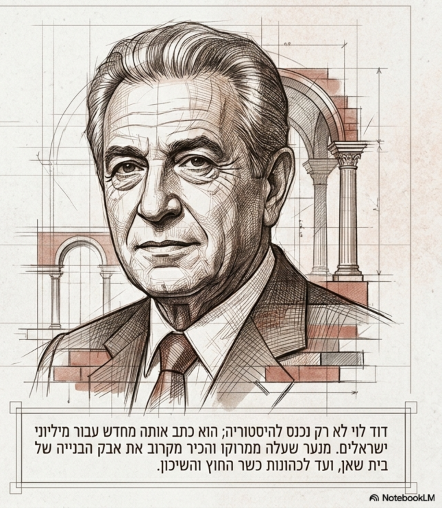
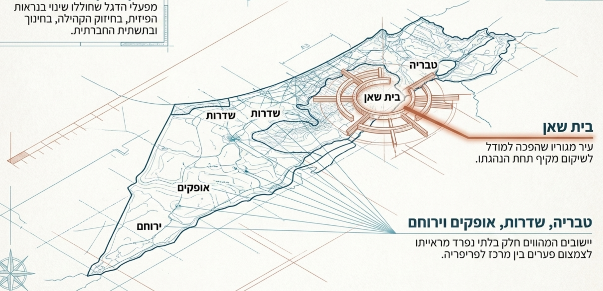

להנציח, לשמר ולהנחיל לדורות הבאים את פועלו הציבורי, החברתי והממלכתי של דוד לוי ז"ל — ממנהיגיה הבולטים של מדינת ישראל, אשר צמח מעיירת הפיתוח בית שאן והגיע לפסגות ההנהגה הלאומית.


דוד לוי נולד ברבאט שבמרוקו בשנת 1937 למשפחה מסורתית וציונית. בשנת 1957 עלה לישראל במסגרת גלי העלייה מצפון אפריקה. המשפחה התיישבה בעיירת הפיתוח בית שאן. מראשית דרכו עבד בעבודות כפיים — בבנייה, בחקלאות ובייעור — והתבלט כמנהיג טבעי שנאבק למען תנאי החיים של העובדים ותושבי הפריפריה.
המשפחה כעוגן ערכי וחברתי: הקים את ביתו בבית שאן יחד עם רעייתו רחל. בני הזוג הקימו משפחה ברוכת ילדים (תריסר ילדים). החלטתו העקרונית שלא להעתיק את מגוריו לירושלים או למרכז הארץ הייתה הצהרה חברתית ותרבותית ברורה: להישאר חלק בלתי נפרד מאנשי הפריפריה מתוך שותפות גורל מלאה. מתוך התא המשפחתי צמחו ממשיכי דרכו הציבורית: בתו השרה אורלי לוי-אבקסיס ובנו ז'קי לוי (סגן שר וראש עיריית בית שאן).
בשנת 2018 הוענק לו פרס ישראל למפעל חיים על נשיאת קולם של מי שלא זכו לייצוג ממשי ועל פועלו ללא לאות לצמצום פערים חברתיים. ביום 2 ביוני 2024 הלך לעולמו בגיל 86, כשהוא מותיר מורשת ממלכתית וחברתית חיה.
ציוני דרך עיקריים מתוך מסמך היסוד של המרכז.
מידע שקוף ומקיף עבור עיתונאים, רשויות מקומיות, שותפים ומחפשי עבודה.
המרכז ינציח לדורות את פועלו ומורשתו האישית והציבורית של דוד לוי ז"ל, ויפעל להנחלת ערכי הממלכתיות, הצדק החברתי, הלכידות החברתית, השוויון ואהבת ישראל.
טיפוח דור חדש של מנהיגים הרואים בשירות הציבורי שליחות, ובכבוד האדם ערך עליון, תוך מתן דגש על קידום צעירי הפריפריה החברתית והגיאוגרפית.
המרכז פועל כארגון ממלכתי ומוסד מורשת לאומי המנוהל על ידי מועצה ציבורית, וועד מנהל וועדת ביקורת בהתאם לחוק המרכז.
המסמך המכונן המגדיר את אבני היסוד, מורשתו ותחומי הפעילות של מרכז מורשת דוד לוי.
כללי המנהל התקין, מטרות העמותה והנחיות הפעילות המוסדית.
השקת המוזיאון האינטראקטיבי הנודד בפריפריה, פיתוח מרכז הדיבייט והרטוריקה, והענקת מלגות מנהיגות צעירה.
דוחות כספיים מבוקרים לשקיפות מלאה מול משרדי הממשלה, הציבור והתומכים.
חוק המדינה המסדיר את מעמדו, תקצובו ופעילותו של המרכז להנצחת מורשתו הממלכתית של דוד לוי.
חברי המועצה הציבורית, הנהלת המרכז, נציגי ציבור ונציגי האקדמיה והחינוך.
הקרן מעניקה מלגות לימודים ומחקר לסטודנטים ופעילים חברתיים מהפריפריה העוסקים בצדק חברתי, מדיניות ציבורית ורטוריקה.
שיתוף פעולה הדוק עם רשויות מקומיות בנגב ובגליל, משרד החינוך, משרד התרבות, מוסדות אקדמיים וארגוני חברה אזרחית.
קול קורא להפעלת תוכניות מנהיגות בבתי ספר, מכרזי רכש ופיתוח תכנים מוזיאליים.
כל מה שמבקר צריך לפני ההגעה, בזמן התכנון ולפי סוג הקהל.
ימים א'–ה': 09:00 – 17:00 | ימי שישי וערבי חג: 09:00 – 13:00
מתחם המורשת, בית שאן / ירושלים (חניה בשפע ונגישות מלאה בתחבורה ציבורית)
התאמות נגישות מלאות לכיסאות גלגלים, מערכות עזר לשמיעה ועזרי ראייה.
תיאום סיורים מודרכים לקבוצות מאורגנות, משלחות דיפלומטיות, כוחות הביטחון וימי עיון מוסדיים.
משאבים פדגוגיים מקיפים עבור מורים, מדריכים וגורמי חינוך בבתי ספר ותנועות נוער.
מערכי שיעור בנושאי מנהיגות, צדק חברתי, פרויקט שיקום השכונות ופריצת תקרת הזכוכית.
טקסטים נבחרים, ניתוחי רטוריקה ונאומים היסטוריים לדיון בכיתות חטיבה ותיכון.
כרזות מעוצבות להורדה והדפסה עבור ימי שיא, שבועות מנהיגות ולוחות זיכרון.
סדנאות דיבייט ותרבות דיון מכבדת לתלמידים ולמועצות תלמידים ברוח מורשת דוד לוי.
לוח פעילויות מתעדכן שוטף — כנסים, הרצאות, ימי זיכרון ותערוכות.
דיון מיוחד בנושא שוויון הזדמנויות ופיתוח הפריפריה בהשתתפות חוקרים, אנשי חינוך ואישי ציבור.
אירוע הנצחה מרכזי במלאת שנתיים לפטירתו — הענקת מלגות המנהיגות הצעירה.
מסלול תצוגה חווייתי ואינטראקטיבי המוליך את המבקר בין תחנות חייו של דוד לוי והמהפכות החברתיות שהוביל.
תצוגת בית שאן, שנות העלייה, עבודת כפיים בבנייה וצמיחת המנהיגות השורשית.
תצוגה אינטראקטיבית של פרויקט שיקום השכונות, מפות התיישבות ודיור ציבורי.
שחזור לשכת שר החוץ, הסכמים בינלאומיים, ועידת מדריד וביטול החלטת האו״ם.
עמדות שמע וניתוח נאומים היסטוריים בכנסת ישראל ותרבות הדיון הממלכתית.
הצטרפו לקהילת התומכים והידידים הפועלים להנחלת מנהיגות וצדק חברתי.
צוות המרכז עומד לרשותכם בכל שאלה, תיאום סיור, פנייה תקשורתית או תמיכה.
בית שאן / ירושלים